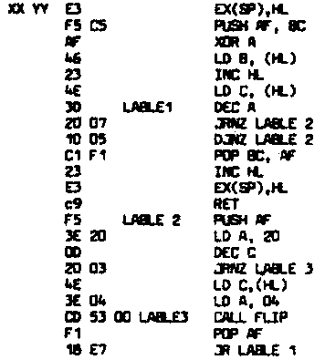
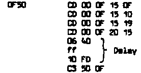
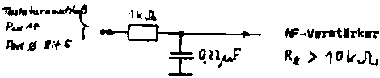

Nascom Journal |
0/80 |
(Manuskript von Ulrich Krüger, Witten)
Dieses Programm ist als Unterprogramm ausgeführt, sodaß man es für viele Anwendungen ins eigene Programm mit einbauen kann.
Der Ton wird am Tastaturstecker, Pin 13 abgenommen und kann dem NF-Teil eines Fernsehgerätes ( Achtung Netztrennung !) oder einem Niederfrequenzverstärker zugeführt werden.
Das Unterprogramm selbst ist voll verschieblich. Der Aufruf für das Unterprogramm sieht dann so aus:
CD YY XX Z1 Z2
CD ist der hexadezimale Code für den CALL-Befehl (Unterprogrammaufruf). Dann folgt die Startadresse des Unterprogrammes mit XX = High Byte der Startadresse YY – Low Byte der Startadresse
Außerdem können noch zwei andere Parameter eingegeben werden. Die Tondauer wird durch den hexadezimalen Wert von Z1 bestimmt. Z1 kann Werte zwischen 00 bis FF annehmen, entsprechend Tondauern zwischen 0,02 Sekunden und 5 Sekunden.
Die Tonhöhe wird durch den Wert von Z2 bestimmt, der ebenfalls zwischen 00 und FF liegen kann.
Das zugehörige Programm sieht dann so aus:

Beispiel:
Vorausgesetzt, die Subr. steht ab 0F00. Aufrufeprogramm ab z.B. 0F50 eingeben:

Beispielprogr. starten: E F50 (new line)
(Ulrich Krüger, Witten)
Ein gutes Beispiel dafür, was man mit etwas Überlegung und souveräner Fachkenntnis zustande bringen kann, ist der Sprachsynthesizer von Ulrich Krüger. Am faszinierenden an dem ganzen Aufbau finde ich, daß so etwas einfaches doch recht brauchbare Ergebnisse liefert. Es lohnt sich auf jeden Fall, die Sache einmal auszuprobieren.
Das Programm verwendet wieder den Port 0 zur Ausgabe. Es wird dort das Bit 5 belegt, das an Pin 14 des Tastaturanschlusses zur Verfügung steht.
Die ganze „Hardware“, die anzuschließen ist, besteht aus einem einfachen Tiefpaß:

Wieder reicht ein normaler NF-Verstärker aus, um das Signal hörbar zu machen.
Die Software besteht aus dem eigentlichen Steuerprogramm, das von 0C50 bis 0C88 liegt. Außerdem ist noch die Sprachtabelle nötig, in die Ulrich jetzt die Worte „Guten Tag“ eingebaut hat, die vorher bei der Aufnahme digitalisiert wurden. Die Ausgabegeschwindigkeit kann mit dem Byte bestimmt werden, das in der Speicherzelle 0C68 steht.
Hier die Software:
| Seite 4 von 12 |
|---|